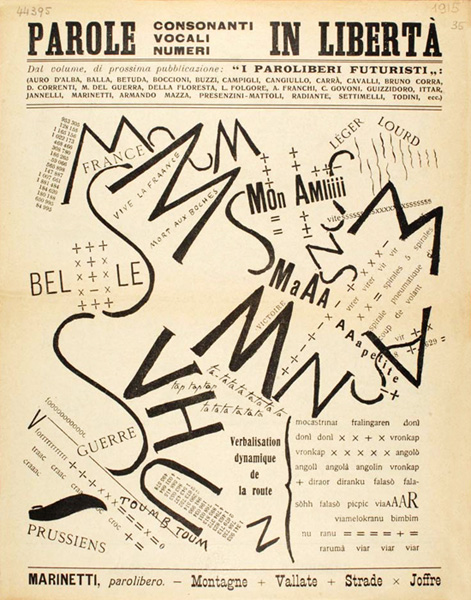
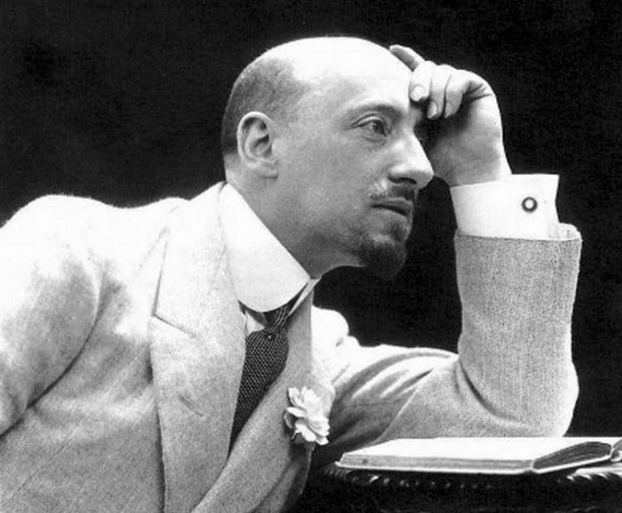

Tra i diritti più importanti c'è sicuramente la libertà di pensiero e di espressione. È qualcosa che oggi consideriamo normale, ma in passato non lo era affatto. Scrittori, artisti e pensatori hanno spesso dovuto lottare per potersi esprimere liberamente. Anche nella letteratura italiana, ci sono stati movimenti che hanno cercato di rompere le regole imposte dalla società proprio per difendere questo diritto.
Il Futurismo nasce all'inizio del Novecento con un'idea chiara: dire basta al passato e alle tradizioni. Marinetti e gli altri futuristi volevano creare un'arte nuova, libera, fatta di velocità, tecnologia e provocazione. Con i loro manifesti e le loro opere, cercavano di scardinare tutto ciò che era considerato “normale” nella cultura. In questo modo, il Futurismo è anche una forma di difesa della libertà di pensiero e della creatività.
Anche il Decadentismo, pur con uno stile più raffinato e simbolico, parla di libertà. Autori come D'Annunzio mettono al centro l'artista, visto come una figura superiore, che non deve seguire le regole della società. È un modo per affermare che ogni persona ha il diritto di vivere e pensare secondo la propria sensibilità, senza essere giudicata o repressa.
In molte epoche storiche, la letteratura è stata uno strumento per dire cose che non si potevano dire apertamente. Scrivere diventava una forma di resistenza contro chi cercava di imporre un'unica visione del mondo. Anche i movimenti come il Futurismo o il Decadentismo, in modi diversi, hanno sfidato l'idea di “pensiero unico” e hanno rivendicato il diritto di essere diversi, originali, fuori dagli schemi.
Anche se oggi viviamo in una società più libera, non bisogna dimenticare che in molte parti del mondo la libertà di espressione è ancora negata. Studiare questi movimenti ci fa capire quanto sia importante difendere sempre il diritto di pensare, scrivere, creare. La letteratura, quindi, non è solo arte: è anche una forma di lotta per la libertà.